EduPortal
An online learning platform: from student interviews and a survey — to a web platform, iOS / Android apps and a landing page.
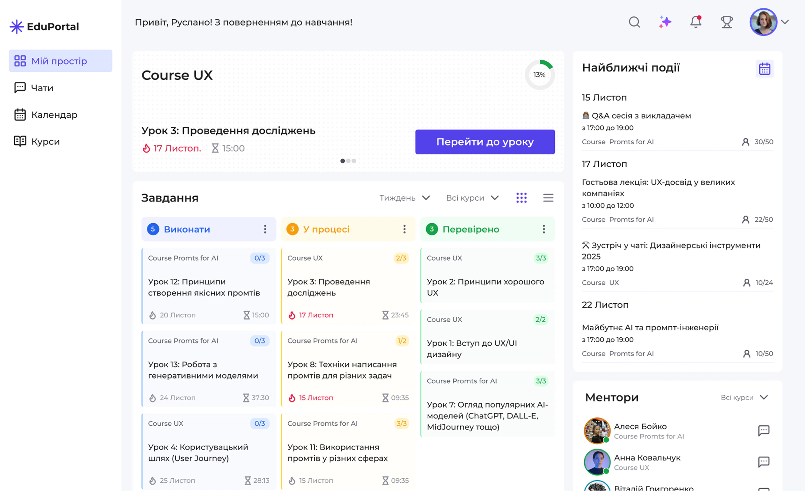
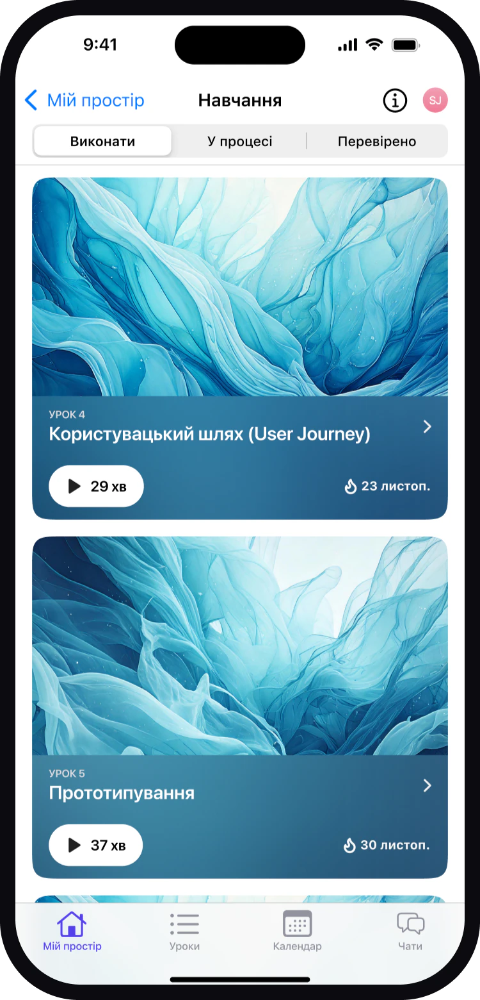
01 — About the project
One platform instead of a course, chats and spreadsheets
The founder of an online course wanted her own platform: recorded courses, live classes and one-on-one lectures — all in one place.
My task was to research students and design a product that works well both for learning and for teaching.
4Product goals
Goal 01
An organised learning space
What to learn now, what’s next and how much is done.
Goal 02
Everything in one place
Lessons, assignments, communication and events — without switching between services.
Goal 03
Easier for mentors
Easy to create and run courses and review assignments.
Goal 04
Accessible to everyone
Clear for people with different levels of tech skills.
02 — My role
Full cycle — from questions to a design system
We ran the interviews and the survey together with my bootcamp group. The analysis, insights, product structure, design for all platforms and the design system are my work.
3With the group
Stakeholder interview
The course founder: vision, goals, constraints.
In-depth interview
How a student takes a lesson and works with a mentor.
Student survey
~60 responses about habits and motivation.
9On my own
Synthesis and 5 insights
Personas and user stories
User flow and MoSCoW
Sketches and wireframes
Maze test
Web platform UI
iOS and Android
Landing page for mentors
Design system
students answered the survey
interviews: the course founder and a student
insights → product decisions
surfaces: Web, iOS, Android, landing page
03 — Research
First — what gets in the way of learning
The goal was to understand students’ needs and problems, so the platform makes learning easier and keeps people engaged. I combined four sources to see the business, the people and the market.
Interview with the founder
Vision, business goals, constraints, success metrics.
In-depth interview
How a student takes a lesson, takes notes and talks to a mentor.
Survey of ~60 students
Devices, feedback formats, motivation, community.
Competitor benchmark
Parameters, usability review, strengths and gaps.
BenchmarkI evaluated competitors (including Coursera and Skillshare) against 5 usability criteria
Learnability
How quickly can a newcomer figure out the navigation and features?
Efficiency
Can tasks be done quickly?
Errors
What mistakes do people make, and are they easy to fix?
Satisfaction
Is there satisfaction and a WOW effect?
Memorability
Is it easy to come back after a break?
want to see their progress visually
value interactive assignments
want to download materials for offline use
study on a laptop or PC
03.1 — From research to decisions
5 insights — and where they live in the interface
After the synthesis, I formulated 5 insights, each with product proposals. They defined what goes on the main “My space” screen.
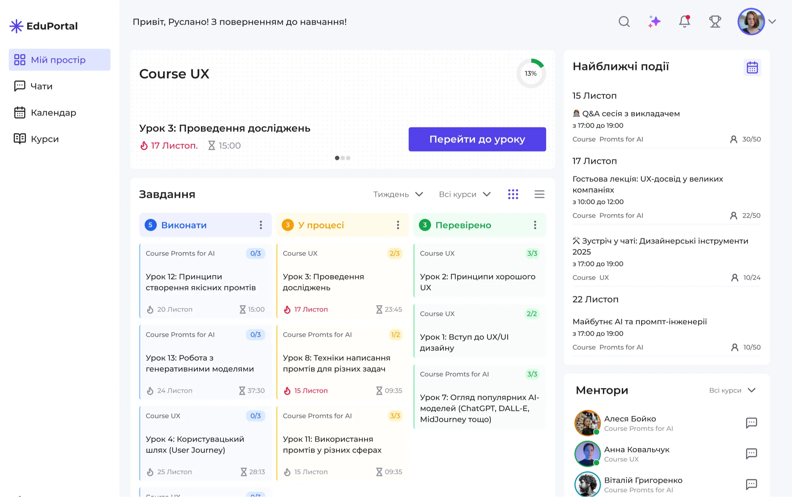
1I SAW
Motivation comes not only from lessons but from the platform too: progress, access, support.
→ I DECIDED
A progress tracker in the course and on “My space”, deadlines on cards, achievements.
2I SAW
A sense of community is missing, even when the course is pre-recorded.
→ I DECIDED
A mentors block and chats, course events: Q&A, guest lectures.
3I SAW
Materials and tools are needed in one place.
→ I DECIDED
“My space”: lesson, assignments, events and mentors on one screen.
4I SAW
Reminders help people not drop out of learning.
→ I DECIDED
Calendar, upcoming events, notifications, deadlines on assignments.
5I SAW
AI is valued for quick answers without waiting for a mentor.
→ I DECIDED
An AI assistant in the header — on every screen.
04 — Product structure
For whom, and in what order
From the insights I built four personas, user stories and a user flow, and sorted features with MoSCoW — to separate must-haves from nice-to-haves.
PERSONA 01
Results-driven
Has a clear goal: upskill or change careers. Values efficiency and a clear plan.
PERSONA 02
Balancing work and study
Always short on time. Looks for courses that fit a busy schedule.
PERSONA 03
New to online learning
Hasn’t taken online courses before and doubts the format. Needs support at every step.
PERSONA 04
Communication-driven
Values working together, group discussions and regular contact with a mentor.
MoSCoWfeature priorities for the MVP
Must have
critical for the MVP
- Personal student dashboard
- Progress tracking
- Deadline and event reminders
- Quick search across materials
- Chat with classmates and mentor
- Calendar of events and deadlines
Should have
important, but later
- Progress autosave
- Feedback panel
- Study planning
- Offline access to materials
- Google Calendar integration
Could have
nice-to-have
- Achievements and rewards
- Focus mode
- Group assignments and projects
Won’t have
not this time
- Zoom and Google Docs integrations
- Audio, presentations and other formats
User flowhow a student starts a lesson and submits an assignment — original from FigJam
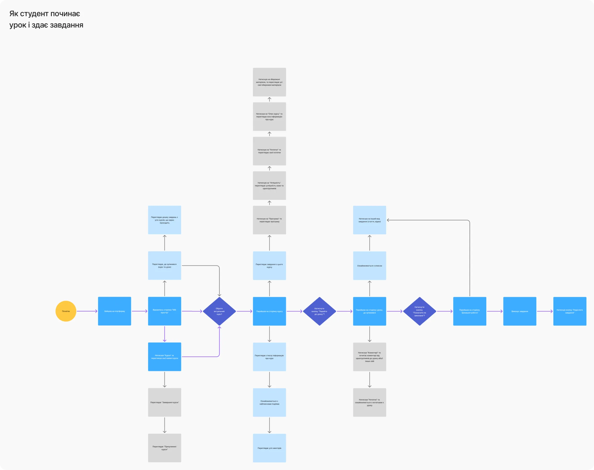
05 — Sketches → wireframes → test
Two iterations before the first UI pixel
First — quick sketches to try out layout options. Then wireframes in two iterations and a usability test of the prototype in Maze.
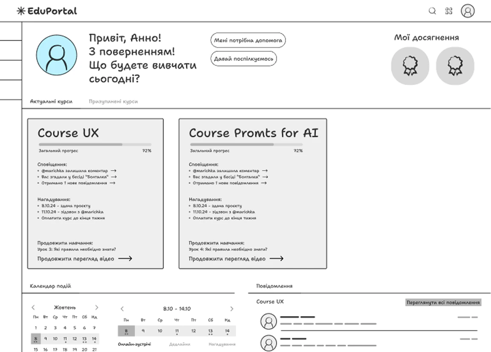
Sketch
First options for “My space”
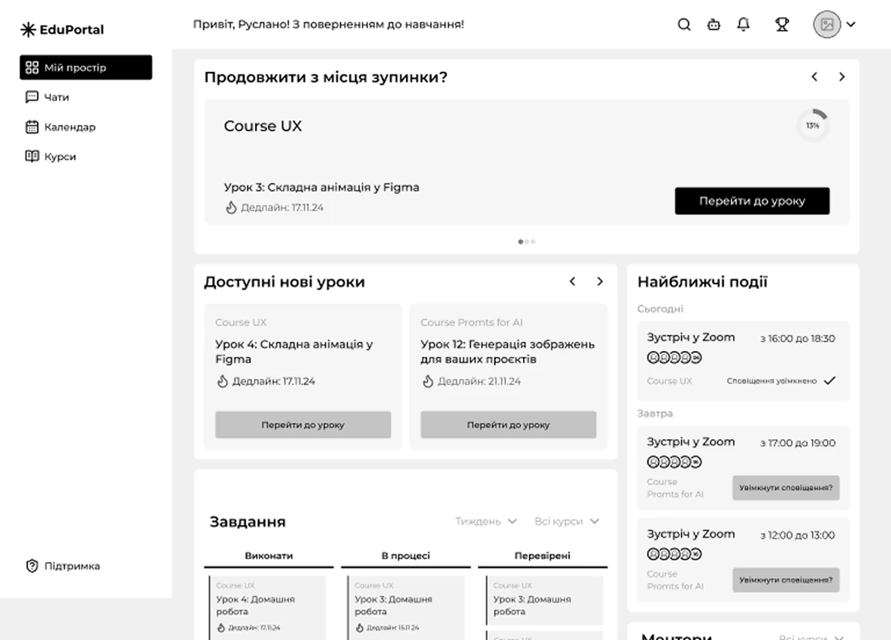
Wireframe · iteration 1
Block structure and navigation
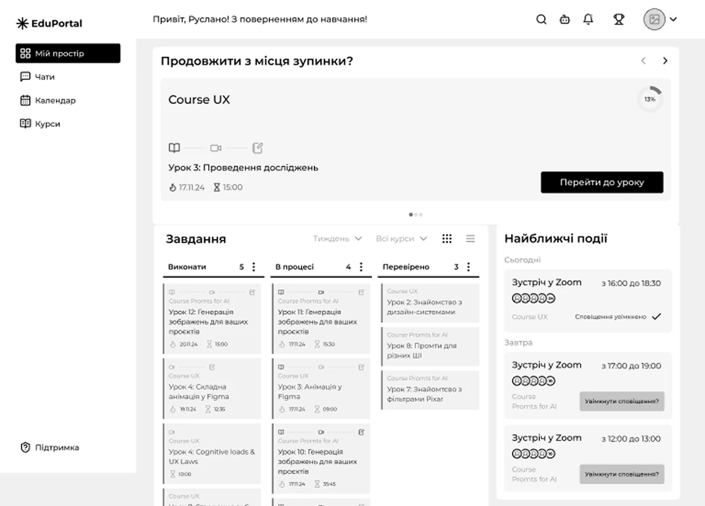
Wireframe · iteration 2
Refined hierarchy after revisions
Users completed tasks on the prototype. I watched where they got lost and, after the test, moved several blocks.
06 — Web platform
Web is the main platform
86.7% of students study on a laptop, so I designed the whole learning journey for web first: from onboarding to homework.
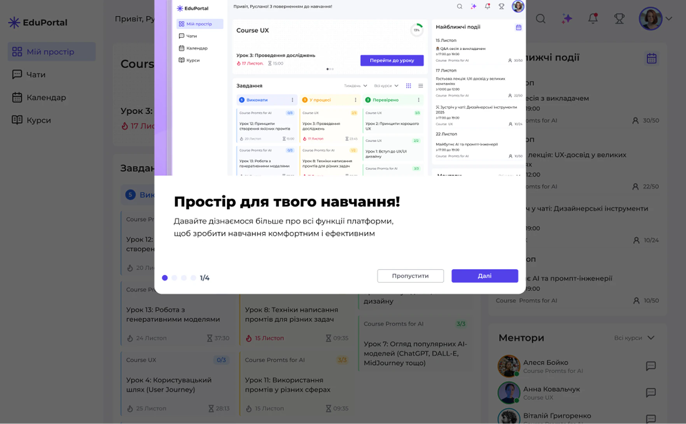
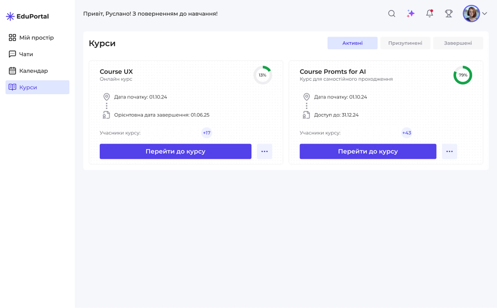
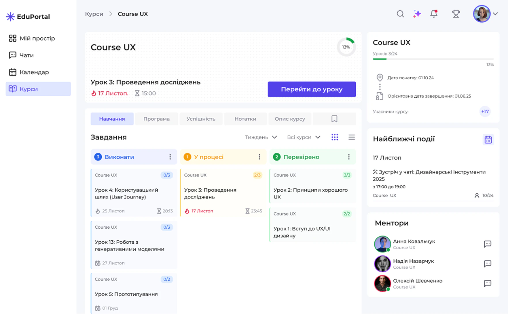
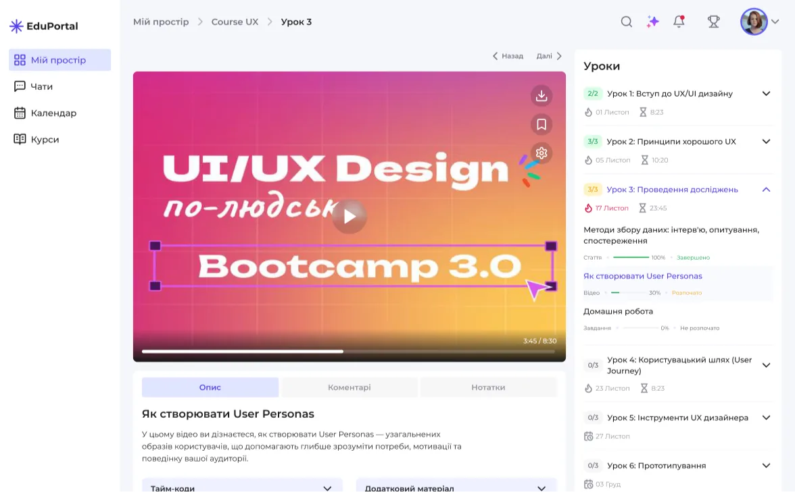
07 — Mobile apps
One logic — two platforms
The mobile app is for learning on the go: lessons, assignments, calendar and chats. The structure is the same, while the patterns are native to each platform.
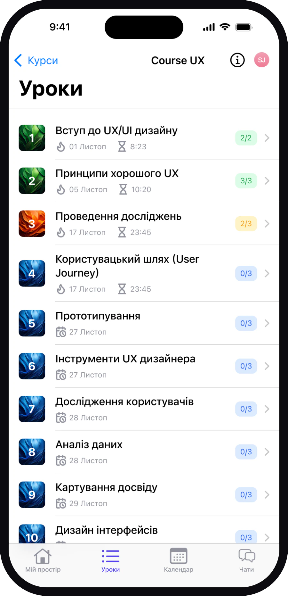
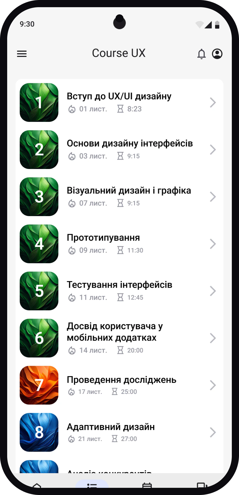
Lightness and gestures
Gesture navigation, a native tab bar, large titles, system fonts, minimal decoration.
Structure and contrast
FAB, cards with shadows, strong contrast and a clear hierarchy following Material 3.
The same journey
My space → Lessons → Calendar → Chats: students don’t have to relearn between devices.
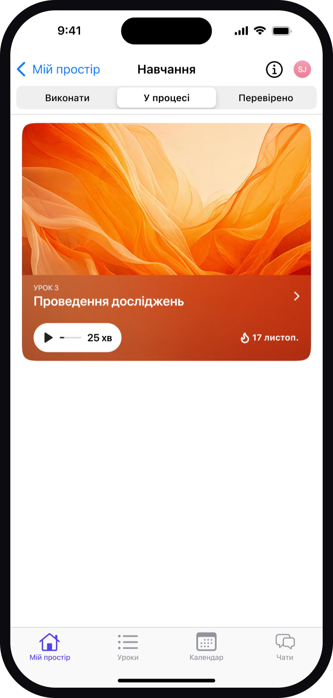
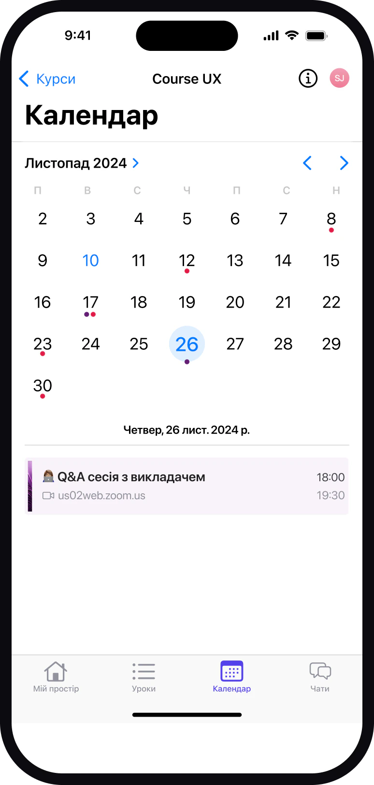
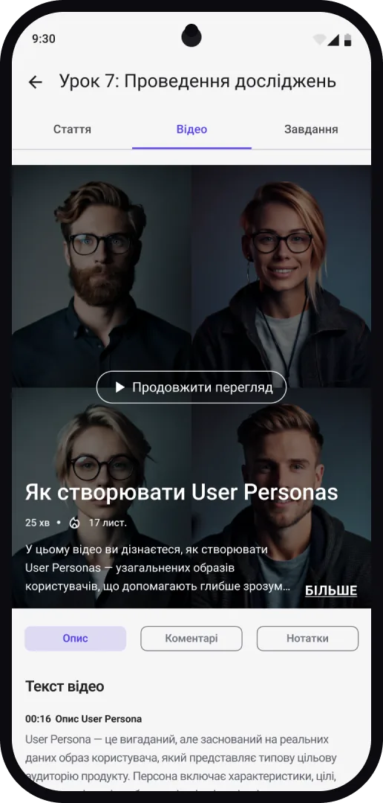
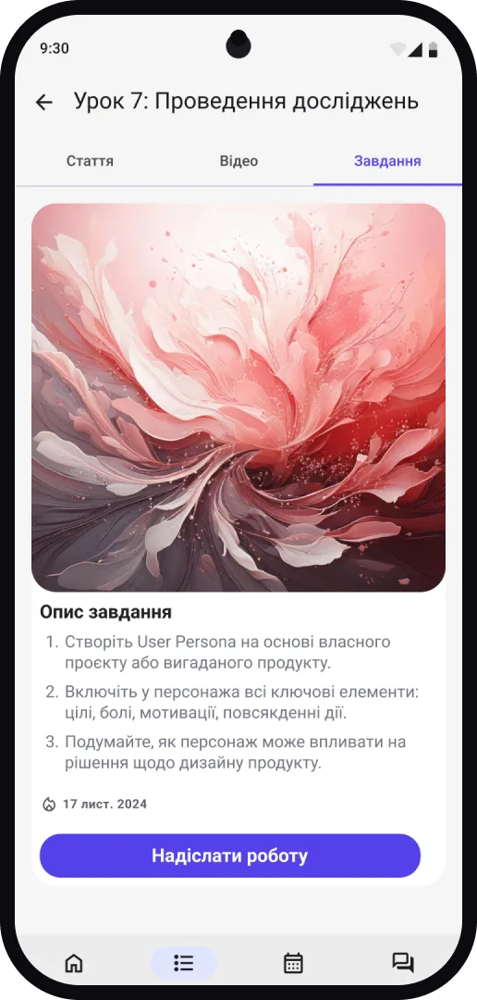
08 — Landing page
The same insights — now as a story for mentors
I didn’t run new research: I took students’ pains and motivation from the research and turned them into arguments for mentors.
- 1
Students’ pains
Confusion, chats, lack of motivation — what mentors see every day.
- 2
EduPortal as the solution
How the platform brings learning into one place.
- 3
Value for mentors
What the teacher and their students get.
- 4
A clear CTA
One clear next step.
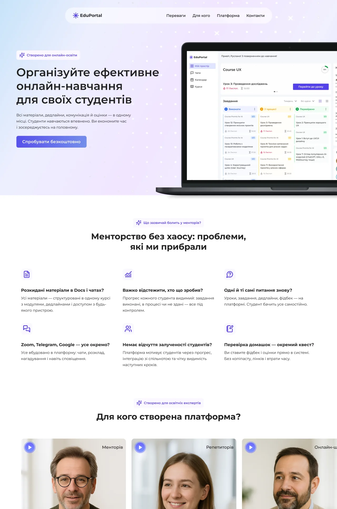
09 — Design system
An atomic system for web and mobile
Colours, Montserrat typography, radii, icons and components — from buttons to lesson cards, kanban and events. Separate libraries for iOS and Android on a shared foundation.
MAIN COLOR
- Success
- Warning
- Destructive
- Cyan
- Purple
Montserrat
Display · Heading · Text · Label
Regular · Medium · SemiBold · Bold · ExtraBold
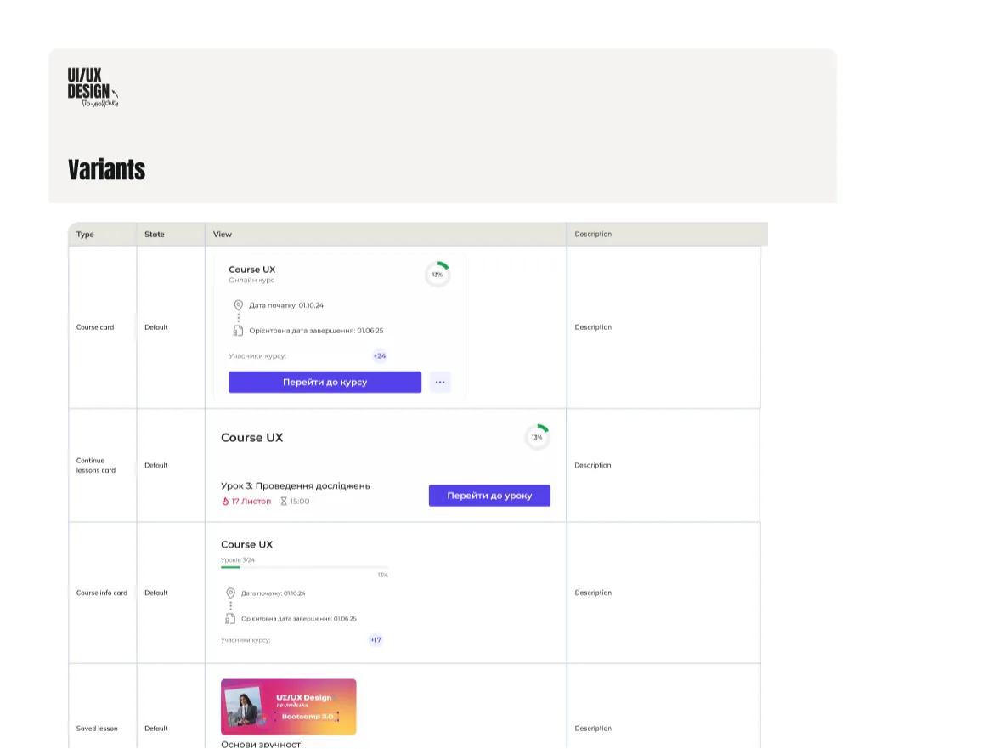
Outcome
Research
5 insights with proposals for each — the basis for every decision.
Web platform
My space, courses, course page, lessons, onboarding.
iOS and Android
Native apps with the same learning logic.
Landing page and DS
A landing page for mentors and an atomic design system.
10 — Reflection
My first big step in product design
What worked
I went through the full cycle — from interviews to finished interfaces. And the research didn’t stay in slides: every insight has its place on the “My space” screen.
What I’d do differently now
For my first big project, I took on too much: web, iOS, Android and a landing page. Now I’d narrow the MVP down to key scenarios, test hypotheses and grow the product step by step.
What I took into commercial work
The habit of backing decisions with research and keeping one logic across platforms. It’s the foundation of my work at the studio.